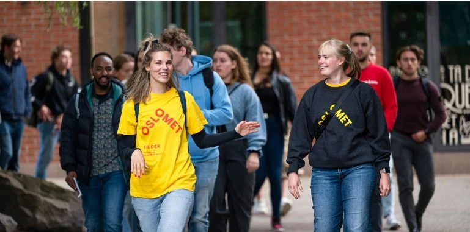
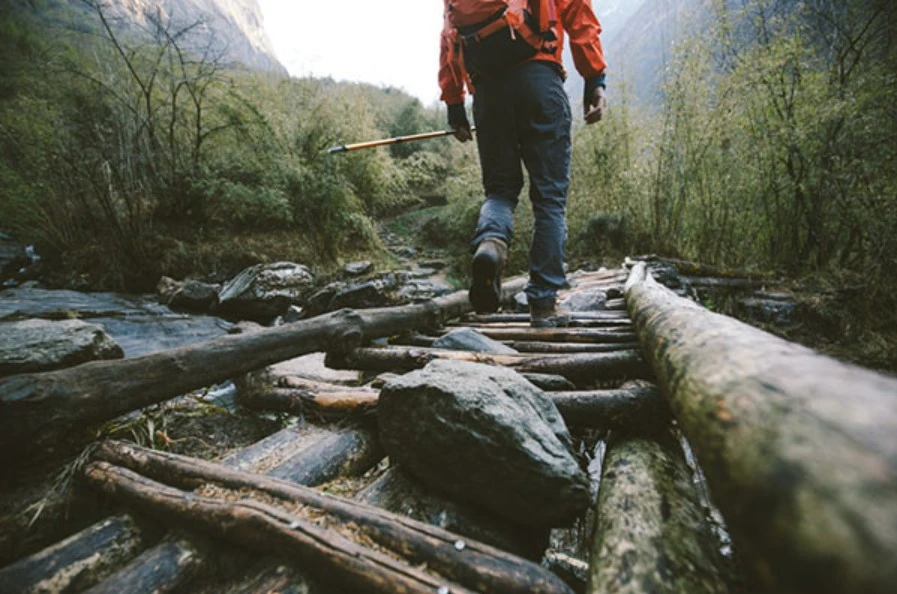
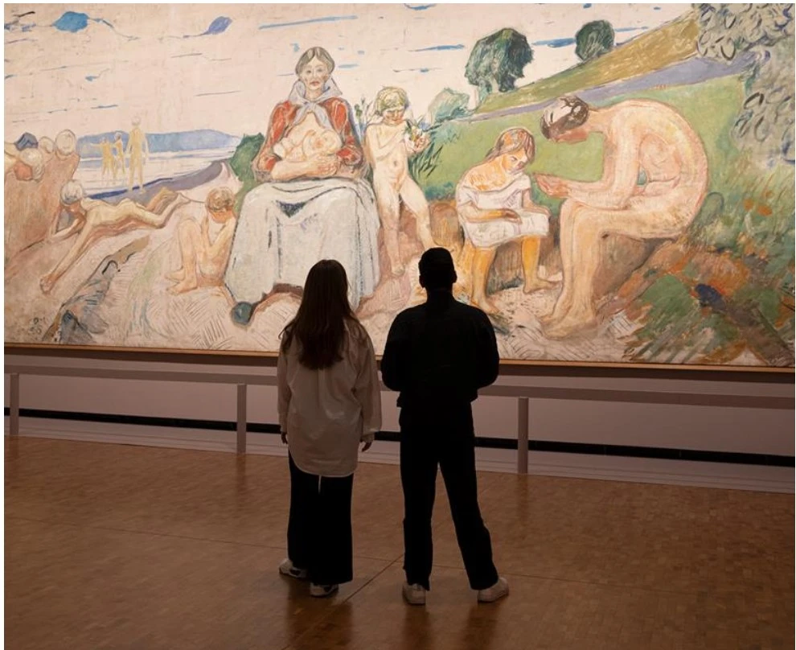
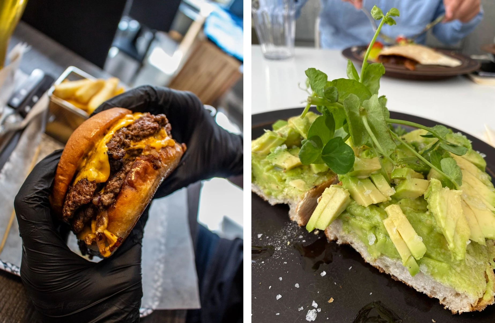

Ny i Oslo?

På denne siden finner du informasjon om studiestart og annet informasjon.
Natur aktiviteter

Utforsk de vakreste naturopplevelsene rundt Oslo, hvor naturen møter eventyret.
Biblioteket
Her kan du låne bøker, filmer og musikk, få tilgang til aviser og tidsskrifter, bruke
datamaskiner.
Munchmuseet

Oppdag fascinerende historie, kunst og kultur på vårt museum.
Matliv

Gode tips til deg som er student i Oslo, slik at du slipper å lete.
Trening
Som student kan du benytte deg av et bredt treningstilbud i regi av SiO